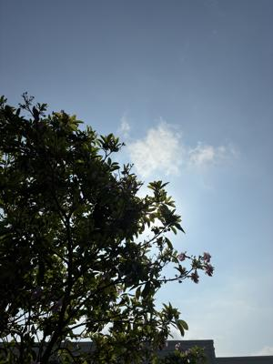
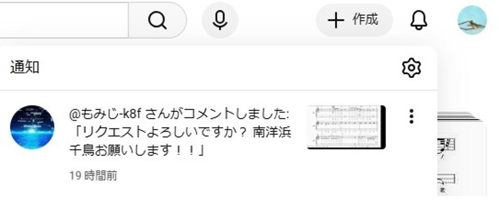
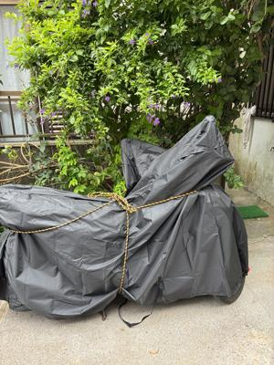

うるがいの話 ある日
最新: リクエストが来た【うるがいの話 ある日】とは 一日だけのプログです
『うるがいの話』の最新一日だけのプログで、通信料が少なく経済的だ。カニの画像をクリックすると全ての日付が載る『うるがいの話』サイトを表示します
|
|
【うるがいの話】 うるがい(ｳﾙｶﾞｲ urugai)とは、『もずくがに』の名前でとても大きくなります。 |
|---|---|
|
|
【カミマヤーの話】 猫のことを方言でマヤーといいます。カミマヤー（kamimayaa）とは、神の猫のことです。 |
|
【たながぁの音楽】 たながぁ（ﾀﾅｶﾞｰ tanagaa）とは手長えびのことで、何種類かあり大きいのは車 エビぐらいになります。 |

|
【ぶながぁの話】 ぶながぁ(ﾌﾞﾅｶﾞｰ bunagaa)とは、赤い髪の毛、赤い身体、そして身長は１ｍ２０ｃｍ ぐらい、川の蟹を食べているの目撃された。場所は沖縄県国頭郡大宜味村のと ある村僕の隣近所に住んでいる爺さんから、聞いた話です。 |
|
|
【ギーマの話】 ギーマ(giima)とは、山原の里山に咲くスズランに似た、 花を付けます。実は食べられます、 気が付くと口の周りが紫になっています。 |
2026年05月31日 (日）リクエストが来た
15:20

@もみじ-k8fさんから、リクエストが来た

んー、知らない歌。マ、取り敢えず、「勉強します」と回答する
書き込まれた動画は「千の風になって」、民謡のネタが尽きたの
で、工工四が載っている本にたまたま載っていた曲を対象にした
のだが。
そしてなぜか今日は県立図書館へ行く日、郷土資料がある階で楽
譜を調べる。ズバリ『南洋浜千鳥』の楽譜は見つかりません。『
浜千鳥』はあるのですが・・・。マ、調べるべ。いつかは、リク
エストが来るとは、想定していたが。
台風の影響が出始めた、天気の良かった昨日の夕方にバイクが風
で倒れないように、向きを変えた。これ、結構大変なのですヨ。
原付バイクと小型バイク、重さがかなり違うので。

昨日の昼から、血尿が出る。尿管結石の影響だと思うが、ハッキ
リと分かるのは、初めて救急へ行った大学生以来である。まだ本
格的な痛みはないが、これからあの激痛が来るのでしょうね、あ
ーあー。